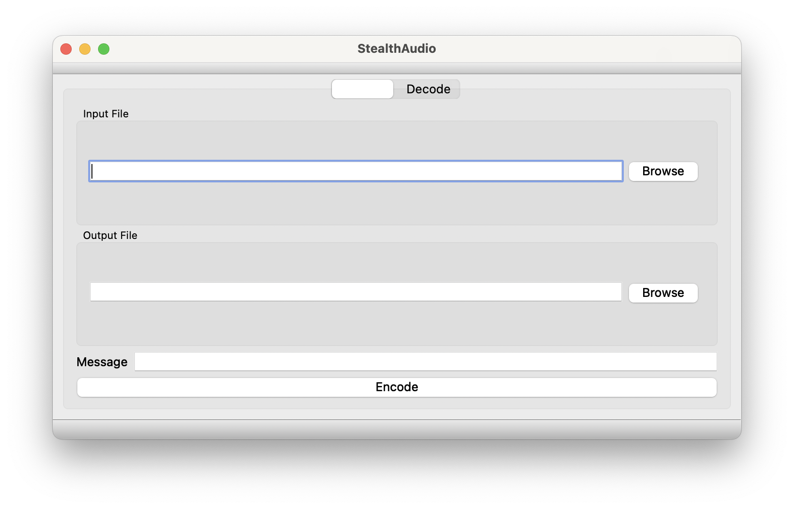

Ananta Anil Shahane
A recent graduate of Universiteit Leiden, holding a Master's degree in Foundations of Computing with experience in iOS development and algorithm design. I'm skilled in C++, Python, Swift, and Golang. With proven skills in Evolutionary Algorithm and interests in Quantum Algorithms, Robotics and Embedded Systems.
I designed and implemented a sophisticated solution capable of figuring out feature importance of time series. This innovative approach effectively computes and provides an approximation of the specific weightings assigned to the individual base time series that collectively contribute to the final time series result.
Remodelled genetic algorithm for green vehicle routing problem accounting for customers' locality, and engineered corridor model. Reduced average AUC for 92 benchmarks of 500 iterations by 10%.
Designed genetic algorithm for searching Deep Learning Architecture for image detection; revealed the link between adjacency matrices and the crossover operator, which improved both convergence speed and stability of the algorithm.
Programmed Xilinx FPGA using the Daedalus Framework to execute edge detection using static affine programming paradigm. Used only 66% of the instructed channels in KPN, earning recognition as the top performing software among peers of about 3.75 FPS.
I researched classical shadows in quantum computing and implemented a randomized measurement toolkit, validated its performance, and utilized it to efficiently evaluate the matrix of underlying quantum circuits. This work, detailed in the research paper here, contributed to reducing the number of required samples for accurate quantum circuit analysis, and I implemented the algorithm and validated the results it claimed.
In Modern Game Artificial Intelligence Applications, I worked on building a 2-D Search and Replace Algorithm, that is an iteration on the procedural content generation allowing one to build 2-D map step by step using regex like commands. I was also involved in building a home using PSG in a minecraft map, using http interface to do it.
I conceived, developed, published, and provided ongoing support for a cross-platform application called Today Productivity. This multifaceted app, available on iOS, iPadOS, and macOS, was meticulously designed to empower users in planning and executing their daily tasks. It offered a comprehensive feature set, including support for Widgets and seamless integration with iCloud for shared and persistent storage across all of the user's devices.

Utilised time averaged K-Nearest Neighbours Algorithm to approximate discrimination between walls and furniture. Helped ease the navigation of the Pioneer P3DX two-wheeled robot with SICK TiM310 LIDAR sensor to different rooms in a home settings.
Built a proxy for a micro-service broker system named Gilmour. The broker runs only on Golang and ruby. Gilmour proxy makes the broker system accessible for all other languages by using https protocol. This broker can handle thousands of micro-services written in different programming languages. Responsibilities include developing and debugging the proxy. Documentation using LateX and markdown. Containerisation and monitoring with Docker and Prometheus.
Designed and build a steganography algorithm, that takes a text and an audio file *.wav from the user, and hides the text into the provided file, it also able to pull out the text embedded in the audio file. The audio file sounds un tampered despite having hidden message in it.
| Type | Details |
|---|---|
| Programming Languages | I am proficient in Swift a protocol oriented programming language, C++ an object oriented programming language, comfortable with Python and familiar with Golang. I can also do scripting like writing daemon files, and running processes using bash. |
| Frameworks | Over the years I have accquired experience with a lot of different frameworks, and have gotten stronger at referring to documentation to get started quickly. These framweorks include Scikit Learn, Cirq, Openfermion, Json, Keras, gdmc, SwiftUI, CloudKit, Qt and many more. |
| Operating Systems | I mostly prefer the stability of Unix and Linux based operating systems, so I have experience in using macOS and Linux Fedora Distro, as a power user, and some familiarity with Windows. I am fluent in using the macOS and Linux terminal and have accquired RHEL Certification for it. |
| Certification Course | edX 2019, Fundamentals of Red Hat Enterprise Linux Awarded for 100% completion of course, with 8 assignments, 6 weeks focusing on Linux Administration. |
| Certification Course | University of California Invine, Coursera 2017 Awarded for 98% grade of course, spanning 4 months and 16 assignments, focusing on various frameworks available on iOS platform. |
| Awards |
|
| Conferences Attended (2017-2023) |
|
| Activities Relax~ |
|
| Languages I speak |
|